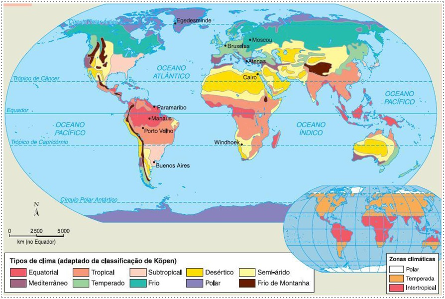
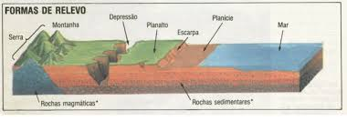
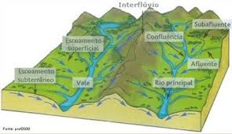

Climas
Adicione uma imagem sobre climas aqui

O clima é o conjunto de condições atmosféricas de uma região ao longo do tempo. Existem diferentes tipos climáticos:
- Tropical: Temperaturas elevadas e chuvas abundantes, como na Amazônia.
- Temperado: Estações bem definidas, como na Europa e na América do Norte.
- Polar: Frio extremo e pouca precipitação, como na Antártida.
- Árido: Clima seco, com pouca chuva, como nos desertos.
- Equatorial: Alta umidade e calor constante, típico de regiões próximas ao Equador.
Relevos

O relevo é a forma da superfície terrestre, moldada por forças internas e externas:
- Montanhas: Formadas pelo choque de placas tectônicas, como os Andes e o Himalaia.
- Planícies: Áreas baixas e planas, ideais para a agricultura, como as Pampas na América do Sul.
- Planaltos: Terrenos elevados e relativamente planos, como o Planalto Central do Brasil.
- Vales: Áreas baixas entre montanhas ou colinas, muitas vezes com rios, como o Vale do Rio Nilo.
Hidrografia

A hidrografia abrange os corpos d'água do planeta, essenciais para a vida e a economia:
- Rios: Como o Amazonas, o mais extenso e volumoso do mundo.
- Lagos: Exemplos incluem o Lago Vitória, na África, e o Lago Titicaca, na América do Sul.
- Oceanos: O Atlântico, Pacífico, Índico, Ártico e Antártico, que cobrem 71% da superfície da Terra.
- Aquíferos: Reservas subterrâneas de água doce, como o Aquífero Guarani na América do Sul.
População
A população mundial ultrapassou 8 bilhões de pessoas, distribuídas de forma desigual pelo planeta. Algumas características:
- Densidade populacional: Altamente concentrada em regiões como Sudeste Asiático e Europa.
- Migrações: Fenômeno comum ao longo da história, motivado por fatores econômicos, sociais e ambientais.
- Crescimento demográfico: Ocorre mais rapidamente em países em desenvolvimento.
- Urbanização: A maioria da população vive em áreas urbanas, resultando em megacidades como Tóquio, Nova York e São Paulo.